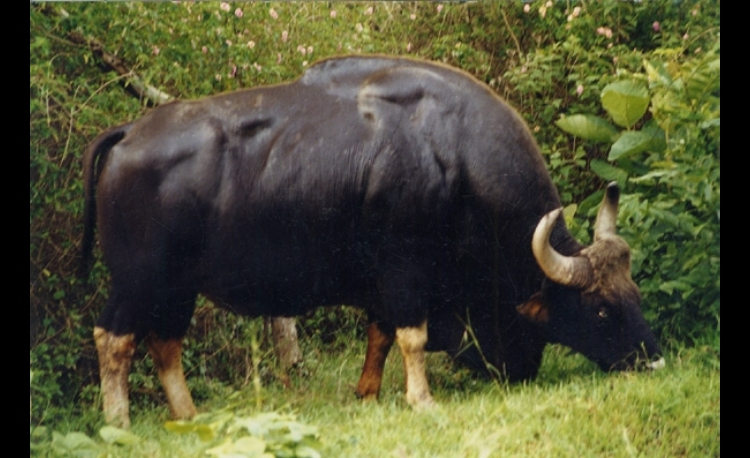

GAUR

| Climate/Terrain | Foreste temperate e montane |
| Frequency | Uncommon |
| Organization | Pack or Solitary |
| Activity Cycle | Day |
| Diet | Erbivoro |
| Intelligence | Animal (1) |
| Treasure | Nessuno |
| Alignment | Neutral |
| No. Appearing | 01-40% 1; 41-100% 2d3+1 |
| Armor Class | 7 |
| Movement | 15 |
| Hit Dice | 5 + 5 |
| Thac0 | 16 |
| No. of Attacks | 1 cornata |
| Damage / Attacks | 2d4+2 |
| Special Attacks | Nessuno |
| Special Defenses | Nessuna |
| Magic Resistance | Nessuna |
| Size | Large |
| Morale | Elite (14) |
| XP value | 270 |
Descrizione
Mammifero alto più di due metri per un migliaio di chili di peso, il Gaur è fra i bovini di più grandi dimensioni. Predilige le fitte foreste o quelle di di alta quota.
Combat
Il Gaur è un animale
possente e molto poco socievole. Difficile da addomesticare (-3 alla prova di
taming) non esita a caricare chi lo disturba. Se carica oltre ad ottenere i
normali bonus della carica raddoppia i danni provocati dalle sue corna.
Nonostante sia un animale di grandi dimensioni è particolarmente veloce ed usa
la sua stazza per correre nella foresta in caso di pericolo senza subire alcuna
penalità al movimento dovuto alla vegetazione.
Habitat/Society
Il Gaur vive in branchi dominati dal maschio più forte (quello con più punti ferita). I maschi adulti possono essere solitari nel 40% dei casi.
Ecology
Per essere particolarmente difficile da addomesticare, nonostante la sua incredibile forza, non viene addomesticato e solo raramente è cacciato per cibo da esperti cacciatori.